如何进入PE系统
无论您是想装系统、拯救文件还是破解密码等，您要做的第一步就是从U盘启动进入PE系统。
本教程为微PE教程，其他PE操作也差不多，大同小异，点击下载微PE
启动PE系统的关键操作顺序：
第一步：在开机时进入主板的启动项列表；
第二步：找到要启动的U盘，并辨别UEFI和Legeacy方式；
第三步：选择一个合适的WinPE系统版本进入。
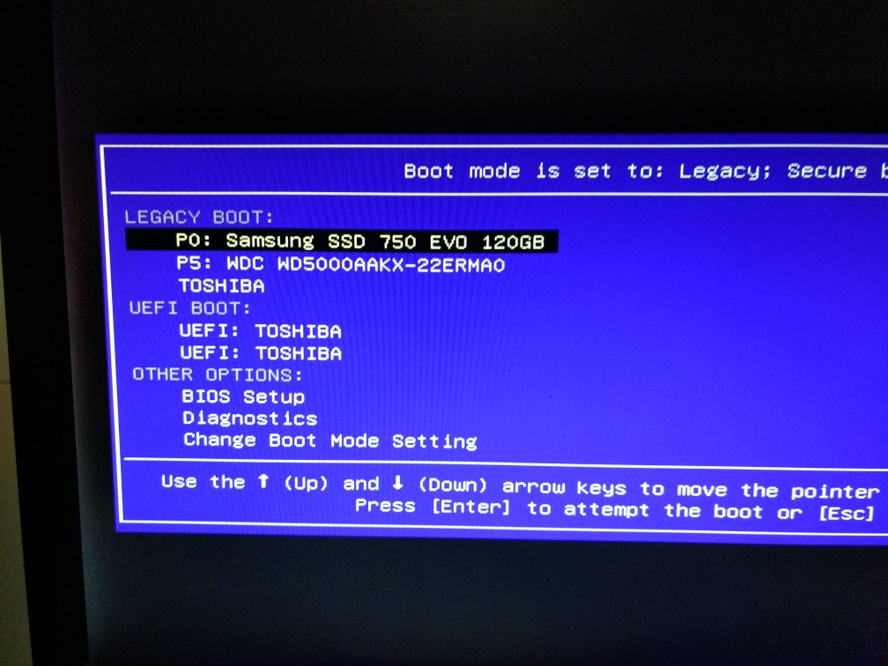
第一步：在开机时进入主板的启动项列表
请将电脑关机，将微PE优盘插入到电脑后开机。然后在开机后的几秒内，当出现开机画面，按下快捷启动热键F12（不同机型请查看下面快捷键列表）进入启动项列表，然后在列表中通过方向键选择U盘所在选项，一般会带USB字样或者是U盘的品牌名（Sandisk、Toshiba之类），然后敲击回车可以进入U盘的PE菜单选择界面。
以下为各种品牌的主板和笔记本的快捷启动按键：
| 组装机主板 | 品牌电脑 | ||
| 主板品牌 | 启动按键 | 电脑品牌 | 启动按键 |
| 华硕主板 | F8 | 联想电脑 | F12 |
| 技嘉主板 | F12 | 宏基电脑 | F12 |
| 微星主板 | F11 | 华硕电脑 | ESC或F8 |
| 映泰主板 | F9 | 惠普电脑 | F9或F12 |
| 梅捷主板 | ESC或F12 | 联想Thinkpad | F12 |
| 七彩虹主板 | ESC或F11 | 戴尔电脑 | F12或ESC |
| 华擎主板 | F11 | 神舟电脑 | F12 |
| 斯巴达克主板 | ESC | 东芝电脑 | F12 |
| 昂达主板 | F11 | 三星电脑 | F12或F2 |
| 双敏主板 | ESC | IBM电脑 | F12 |
| 翔升主板 | F10 | 富士通电脑 | F12 |
| 精英主板 | ESC或F11 | 海尔电脑 | F12 |
| 冠盟主板 | F11或F12 | 方正电脑 | F12 |
| 富士康主板 | ESC或F12 | 清华同方电脑 | F12 |
| 顶星主板 | F11或F12 | 微星电脑 | F11 |
| 铭瑄主板 | ESC或F11 | 明基电脑 | F9或F8 |
| 盈通主板 | F8 | 技嘉电脑 | F12 |
| 捷波主板 | ESC | Gateway电脑 | F12 |
| Intel主板 | F12 | eMachines电脑 | F12 |
| 杰微主板 | ESC或F8 | 索尼电脑 | ESC |
| 致铭主板 | F12 | 苹果电脑 | 长按“option”键 |
| 磐英主板 | ESC | ||
| 磐正主板 | ESC | ||
| 冠铭主板 | F9 | ||
| 注意：其它机型请尝试或参考以上品牌常用启动热键 | |||
另外您还可以在BIOS设置中，将U盘设置为第一启动项启动U盘，具体方法可以百度。
第二步：找到要启动的U盘，并辨别UEFI和Legeacy方式
微PE优盘支持两种启动方式：
- UEFI
- Legacy
当您的机器支持UEFI的话（新机器一般同时支持Legacy和UEFI），在这个启动项中一般会出现两个U盘的选项，一个是UEFI开头的，另一个是不带UEFI开头的或叫Legacy的：
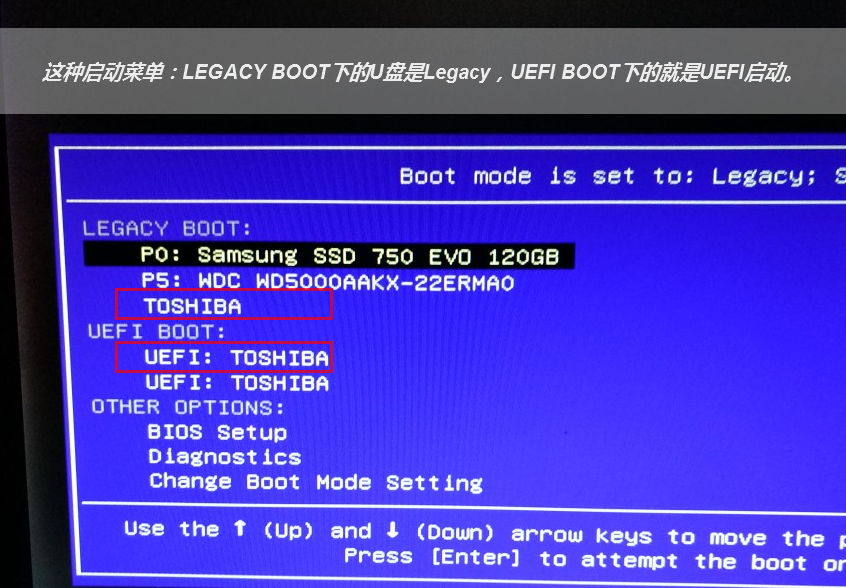
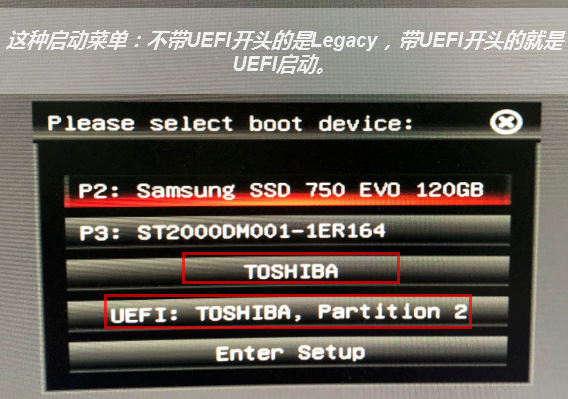
当您的机器（老机器）只支持Legacy时，在这个主板的启动项中就只会出现一个U盘的选项：
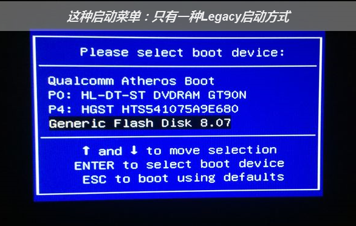
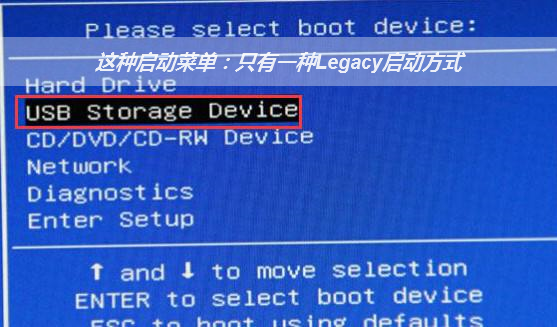
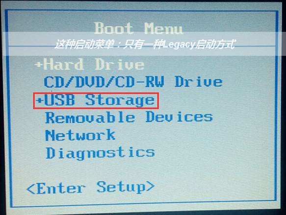
UEFI/Legacy启动方式的选择，对后续安装系统的时候影响比较大，一般情况下，如果需要用EFI方法安装系统（硬盘分区表为GPT），就启动UEFI的PE。如果用传统方式安装系统（硬盘分区表为MBR），就Legacy启动方式启动PE，这个按照您自己的需求选择。如果不清楚的话可随意先进一个，如果后面遇到问题再回来重选即可。如果是只支持Legacy启动的老机器，那就没得选，只能以Legacy方式启动PE。
注意：一些新机器默认了只开通了UEFI启动，如果需要打开Legacy启动，需要进BIOS设置中关闭SecureBoot。
选中需要启动的U盘选项，继续敲回车之后，均会先进入PE版本选择界面。但以不同的方式进入，显示的PE选择界面是不同的。Legacy启动时，PE选择菜单为蓝色天空背景。UEFI启动时，PE选择菜单为黑色纯色背景。
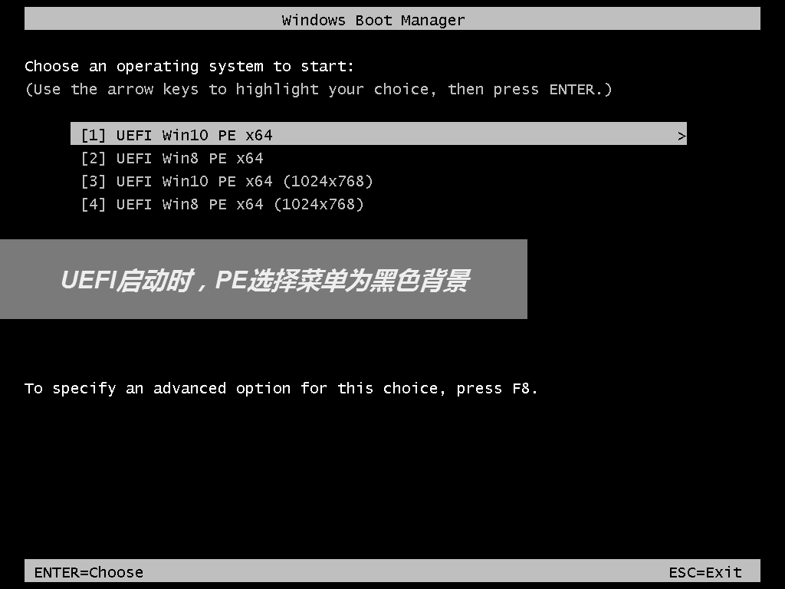
第三步：选择一个合适的WinPE系统版本进入
微PE优盘支持多个PE系统，在黑色或蓝色PE选择界面可以按需选择，legacy启动的蓝色菜单可以让您自由决定PE系统版本和位数32位或64位，而UEFI启动的黑色菜单，已经按照机器的情况自动确定了位数，您只能选择系统版本。10PE和8PE是目前最常用的两种PE，10PE用于比较新的机器，8PE用于比较老的机器。如果不太清楚，选默认第一个Win10PEx64就好。选中后，敲击回车正式进入PE系统。
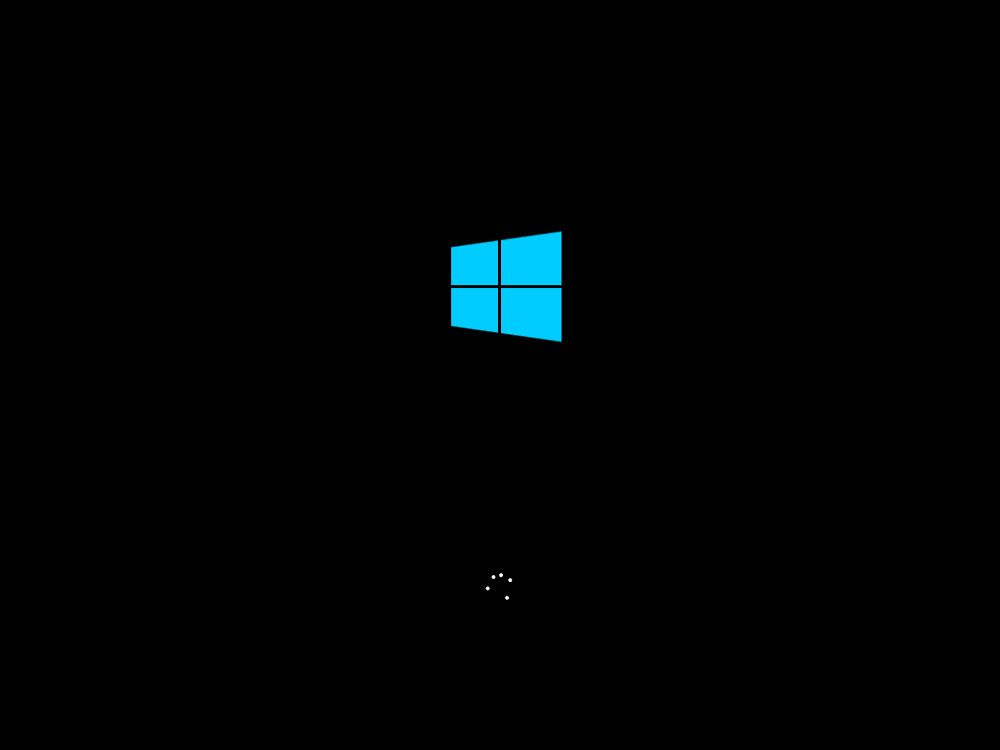
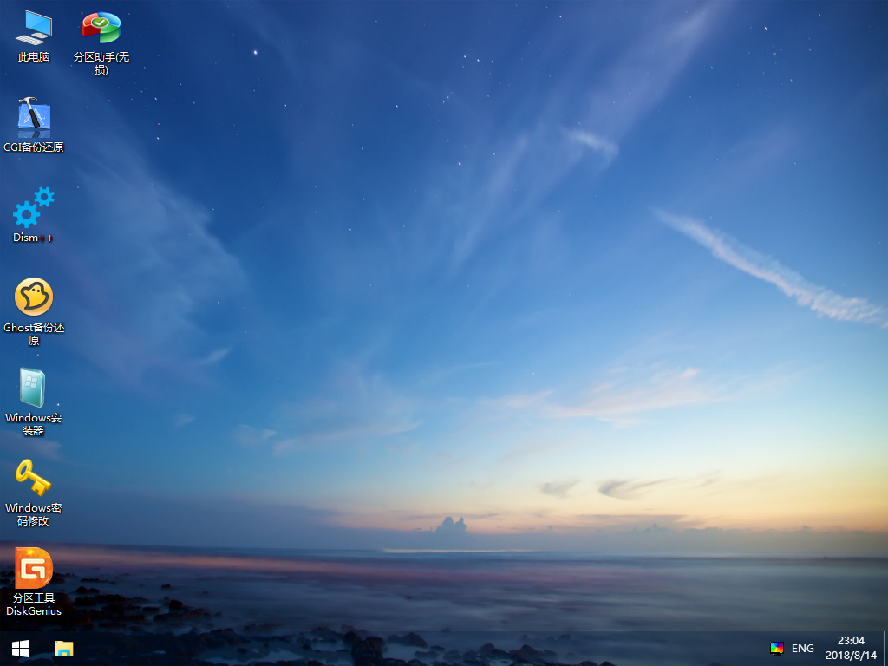
如果您能成功进入到这个PE桌面，并且知道自己进入的是legacy方式的PE，还是UEFI方式的PE（通过在PE版本选择菜单页中背景是蓝色/黑色确定），就完成第一步。虽然现在看起来只完成了一小步，但这是迈向成功的一大步。
判断分区表类型
进行到这里，您就已经成功进入了微PE的桌面了，但是为了您能够正确的使用PE，避免各种可能出现的问题、保护数据安全，请务必按照这里的要求，了解您的本地磁盘结构。并确认自己系统盘所在的磁盘号和磁盘分区表类型。

PE下的盘符顺序和本地系统内很可能不同
PE下的硬盘驱动器盘符的顺序（就是C盘、D盘、E盘…这种盘的顺序）和本地系统内看到的可能不一样，特别当您电脑里有2块以上硬盘的时候。平时您在正常系统内看到的C盘，很有可能在PE里就显示成了D盘E盘之类的，您在PE内看的C盘有可能不是真正的那种系统盘“C盘”。这是一种PE内正常的磁盘错乱的现象。没关系，不用管就行了。您只需要认准一件事情：通过分析磁盘结构和分区结构，确认自己的系统盘的位置和盘符即可。
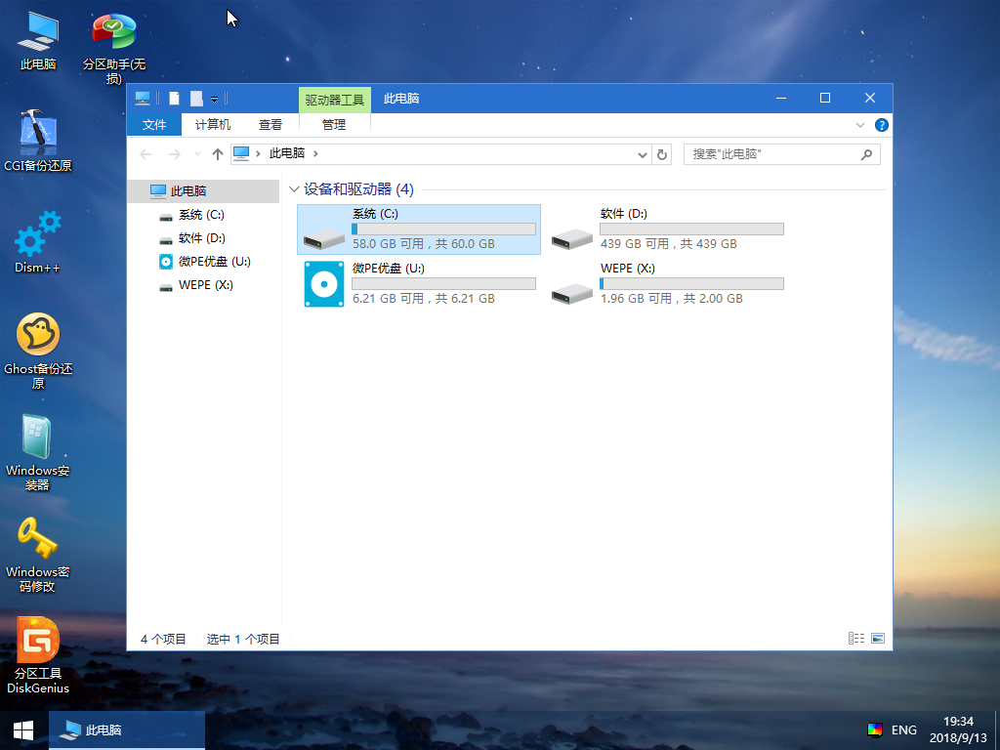
使用分区工具查看硬盘的分区结构
进行这个操作需要借助专业的分区工具，这里我们推荐分区助手，比较简单直观。打开PE桌面上的“分区助手(无损)”。查看电脑里的硬盘和分区信息，了解每个硬盘的分区表类型，并定位系统分区所在位置，您大概会看到下面三种情况：
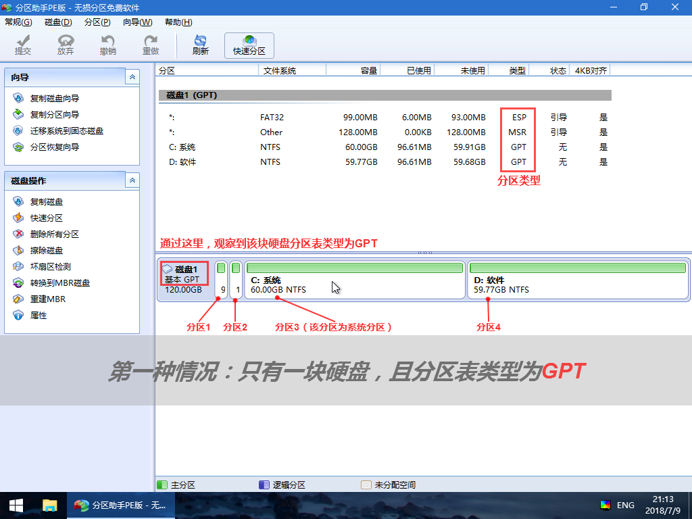
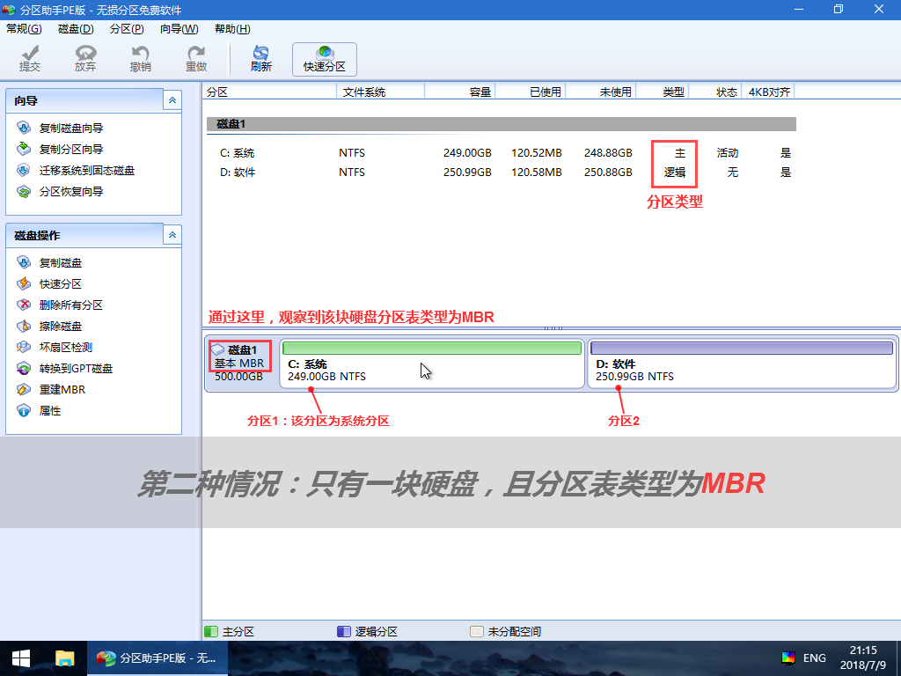
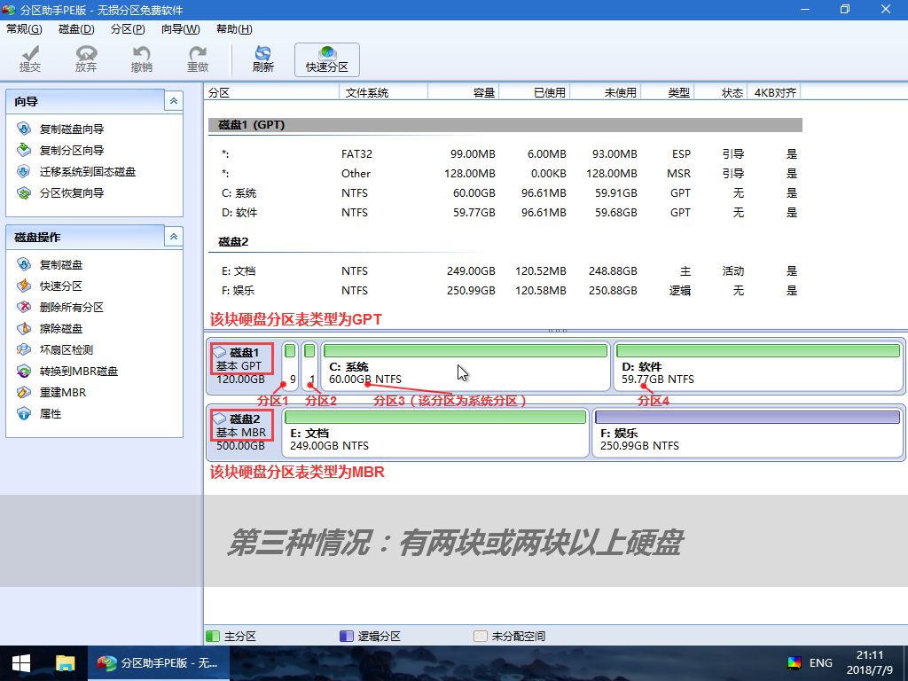
观察硬盘分区表类型方法
硬盘分区表有两种类型：
- GPT
- MBR
从以上图片中红色框框中圈出的位置上，我们可以准确辨别出硬盘的分区表类型。
如果概括起来解释这两种分区表的区别，就是：
- GPT 新型分区表类型，需对应UEFI启动，支持快速启动，支持2TB以上硬盘
- MBR 传统分区表类型，需对应Legacy启动，旧机器上比较常见
请记下您的分区表类型，这很重要。
观察系统盘所在硬盘和分区方法：
通常情况下，PE下的C盘就是系统所在分区和硬盘。打开分区助手之后，直接去找被分配为C盘的那个分区。并通过下面这个策略去验证这个C盘是不是真正的系统所在分区：
对于MBR分区表的硬盘，一般第一个大容量的主分区就是系统盘所在分区。
对于GPT分区表的硬盘，一般第一个大容量的GPT就是所在分区。
打开PE桌面上的此电脑（计算机），打开C盘，看看里面有木有Windows目录。 其实，PE里，绝大多数系统盘所在分区，都会被分配为C盘。以上就是保险起见的多次确认。
请记下您的硬盘上系统盘的位置，这很重要。
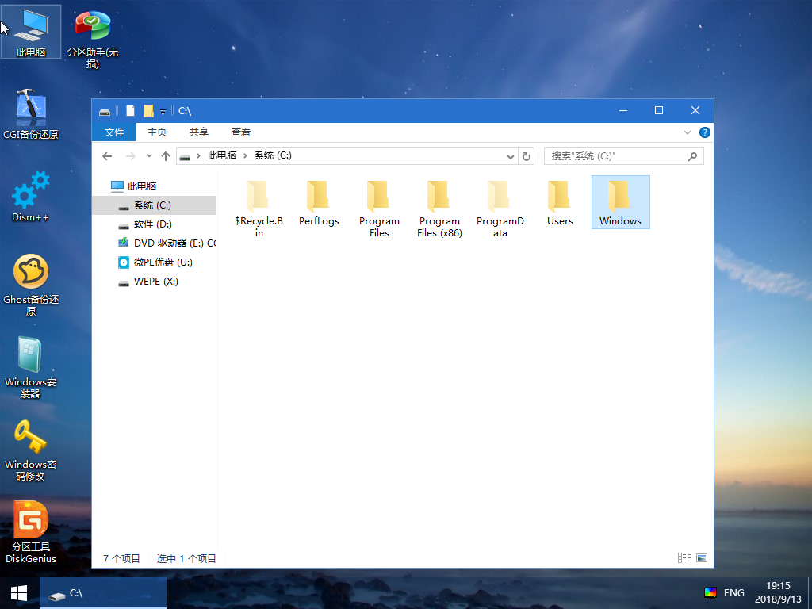
如果您是全新机器装系统，或者想整体格式化一下磁盘，清除全部数据，全新安装系统，那么以上文字可以暂时忽略。 至此，您已经进入PE，并分析好了电脑里硬盘和分区的情况，掌握了您的系统盘所在位置。您当前已经具备了正确使用微PE优盘基本条件。下面您就按照自己的需要做想做的事情了。开始吧。
原生安装Windows8.1&10
本篇教程将详细介绍使用微PE安装微软原版系统的具体方法流程、注意事项、异常问题解决等。
Windows PE系统的全称叫做Windows Preinstallation Environment，即Windows预安装环境。顾名思义，这是安装系统前需要进入的环境，为安装系统而生。在PE内，通过挂载微软原版的系统ISO镜像，执行原生的安装程序SETUP.EXE，进入安装界面，这种方法安装系统，是最原生的安装方式。本方法同时支持UEFI和Legacy启动的系统安装，并且不管是UEFI方式还是Legacy方式，具体安装系统操作步骤都一样。
本方法支持的系统：Windows 7，Windows 8.1，Windows 10等NT6系列的全部系统。本方法不支持安装XP。
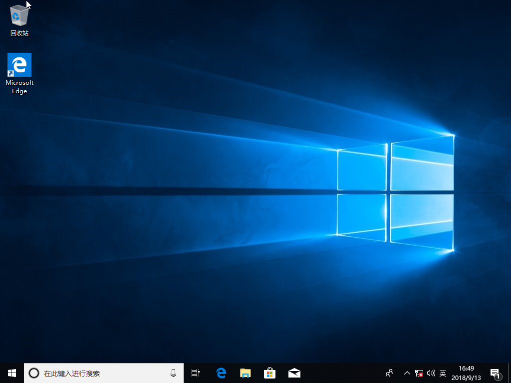
安装系统前的准备工作
使用微PE优盘安装系统的具体操作步骤并不多，如果能按照下面的要求做足充分的判断，可极大提高成功率。
确认自己要安装的系统位数是64位还是32位？
如果是安装64位系统，则必须进入64位PE，如果是安装32位系统，请首选进入32位PE。
原生安装方式对UEFI还是Legacy启动PE有严格要求
UEFI启动的系统，系统盘所在硬盘的分区表为GPT，PE应为UEFI启动。
Legacy启动的系统，系统盘所在硬盘的分区表为MBR，PE应为Legacy启动。
请牢记UEFI<->GPT和Legacy<->MBR的这种对应关系。并通过当前硬盘的分区表类型判断机器之前是哪种方式启动。
若PE启动方式选择错误可以重新选择。
判断系统盘所在硬盘的位置？
如果您的机器上装了多块硬盘，请做好区分，别装错了。如果需要提前分区，就先分好再装。
请务必提前做好数据备份
安装的时候要格式化C盘，请务必将C盘文件备份至其他。必要时，将文档照片类的不可再生数据存储至外部存储器一份。
正式开始安装系统
安装原版系统的操作步骤为：
- 第一步：PE内将要安装的系统ISO镜像挂载为虚拟光驱；
- 第二步：运行Windows安装程序Setup.exe一步一步开始安装；
- 第三步：等待系统安装完成，做最后的系统配置；
- 第四步：进入桌面，装驱动装软件。
第一步：将要安装的系统ISO镜像挂载为虚拟光驱
从U盘启动进入PE内，打开U盘内的存放系统镜像的“ISO”目录，找到要安装的镜像。

对着ISO镜像点右键，选择挂载，或者直接双击，该ISO就会被挂载为一个新的虚拟的光盘驱动器，和插入安装光盘效果类似。它会显示在“我的电脑”里，并且有一个盘符。

第二步：运行Windows安装程序Setup.exe一步一步开始安装
运行这个虚拟盘符内的windows安装程序Setup.exe，就进入了windows的原版安装界面。
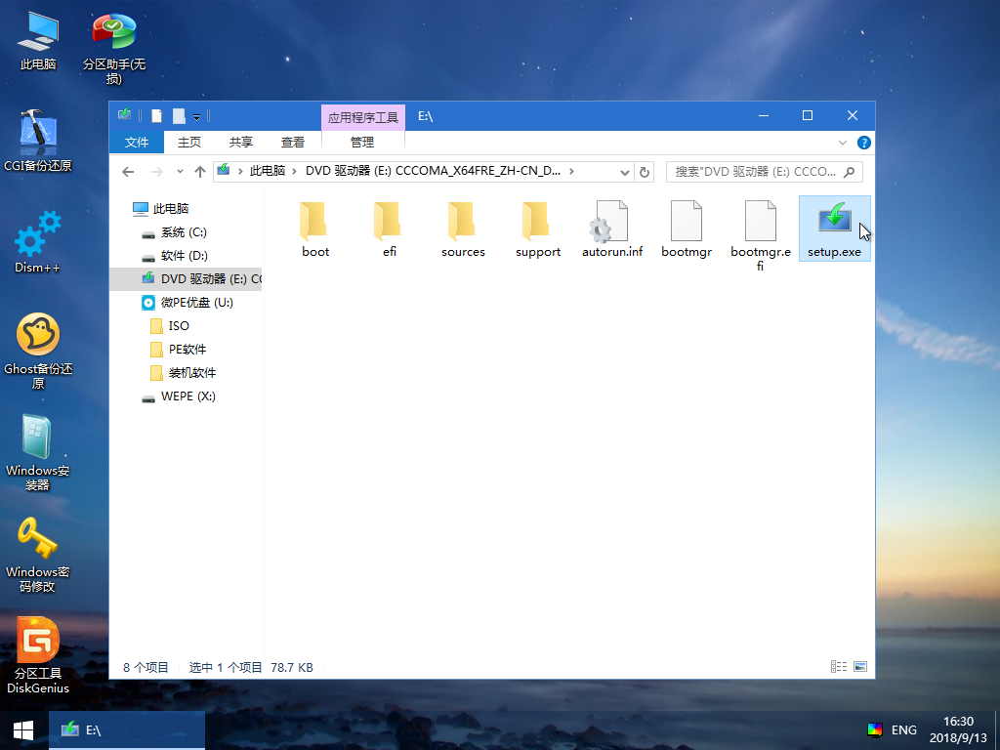
在Windows安装程序中点击“现在安装”开始，一步步往里点。
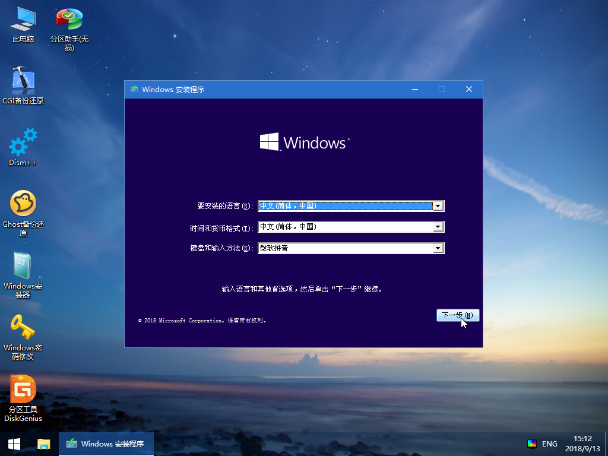
有对应产品密钥就输入，没有产品密钥就跳过输入密钥，待安装完系统再想办法激活。
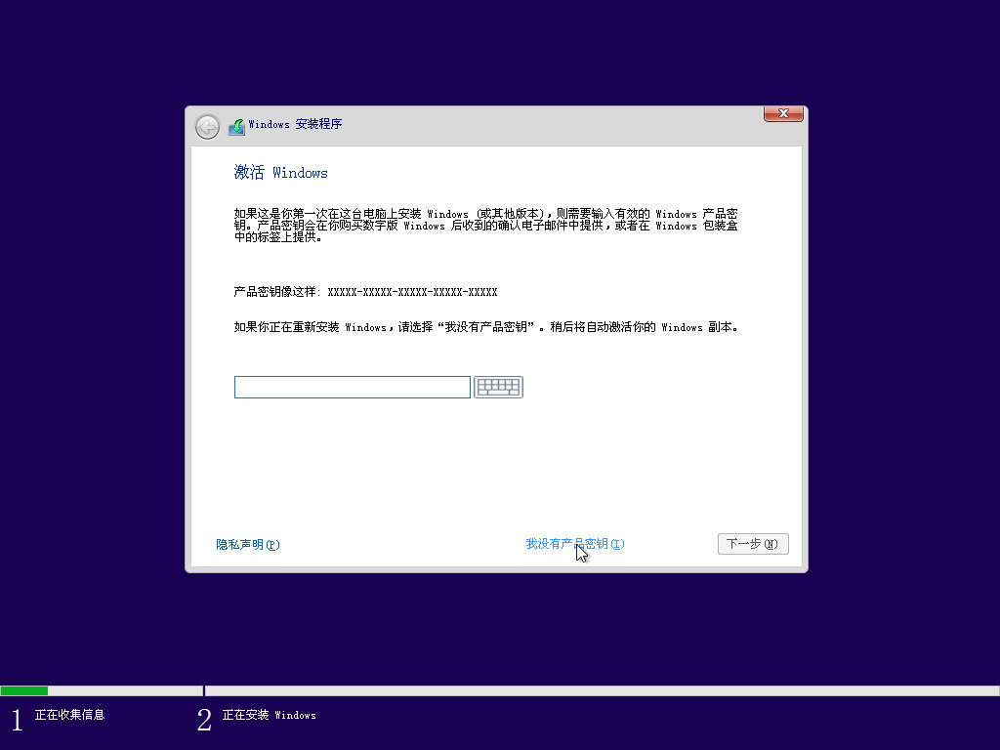
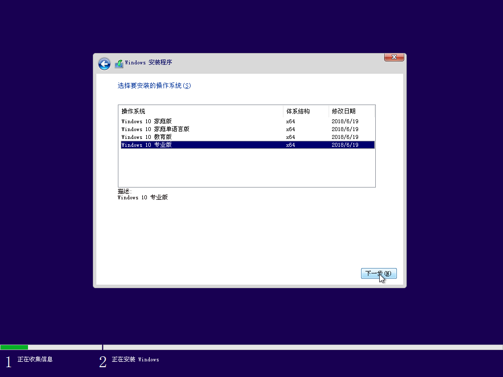
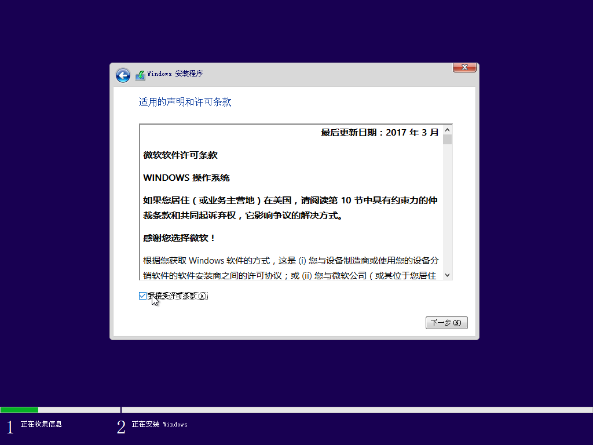
系统版本那里自行选择，安装类型那里选择 “自定义”，直到进入到待安装磁盘位置的页面。
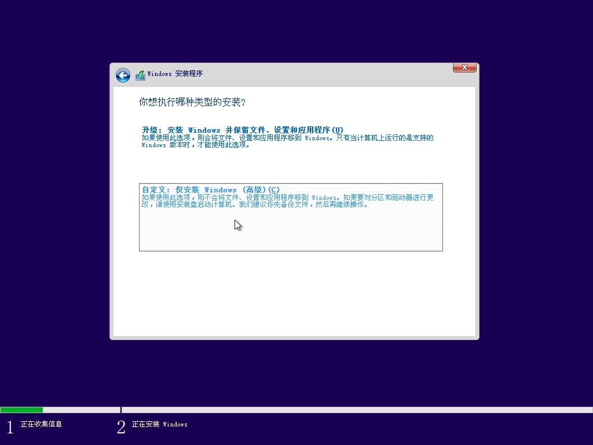
在这个界面中，需要做一个操作，来提升提升安装成功率。请先定位到您系统盘的位置，观察前面有几个小分区，百十来兆的样子，有时候一个，有时候两个，直接把小分区连同系统大分区一起删除。是的您没听错，选中后直接点红××删除它们，留下一个完整的“未分配空间”。
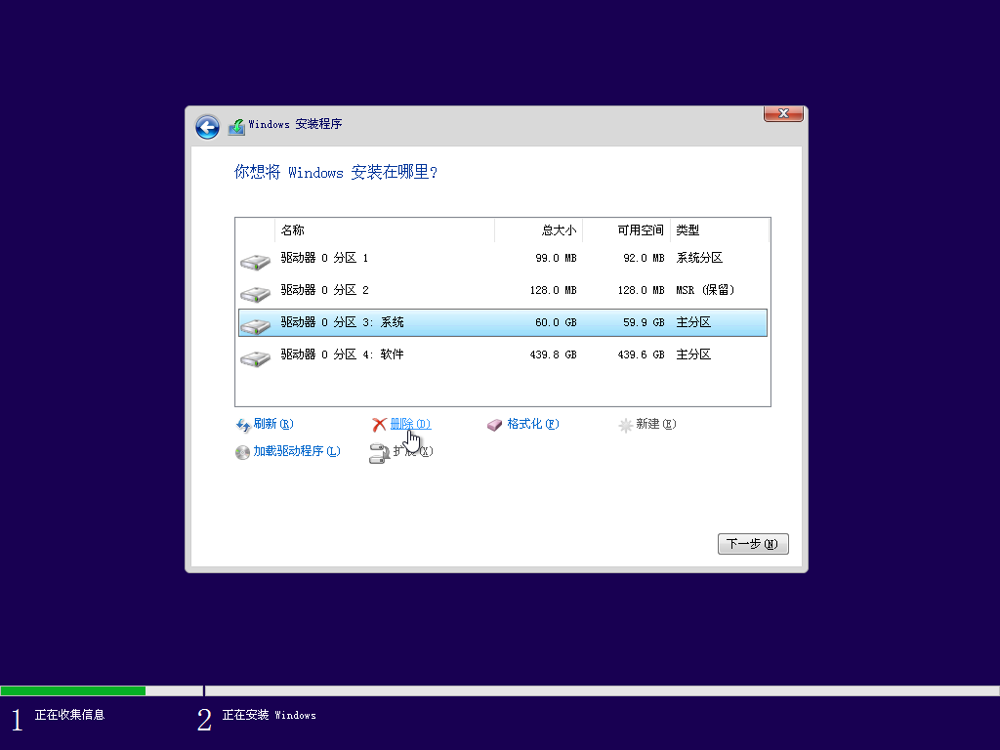
然后在这个未分配空间上点下一步，这个时候系统就开始安装了。
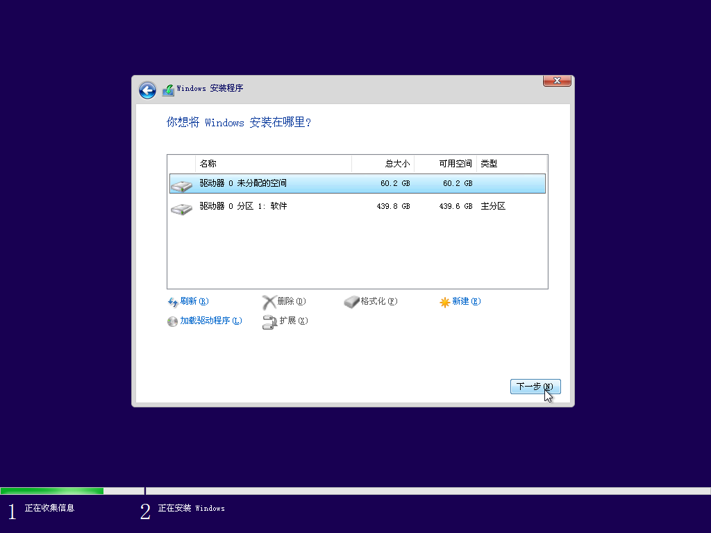
如果不出意外，等进度走完，重启后，就进入了安装配置阶段。
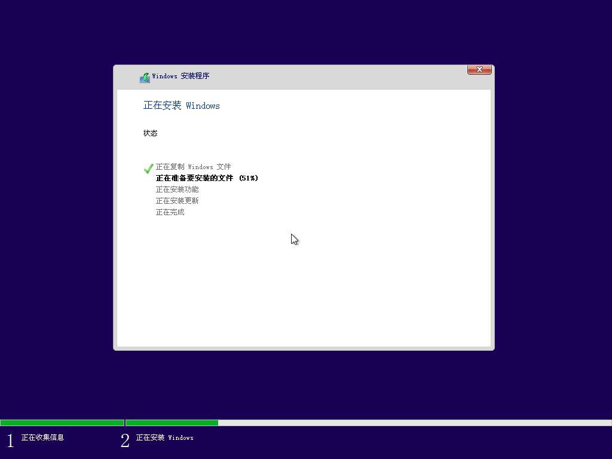
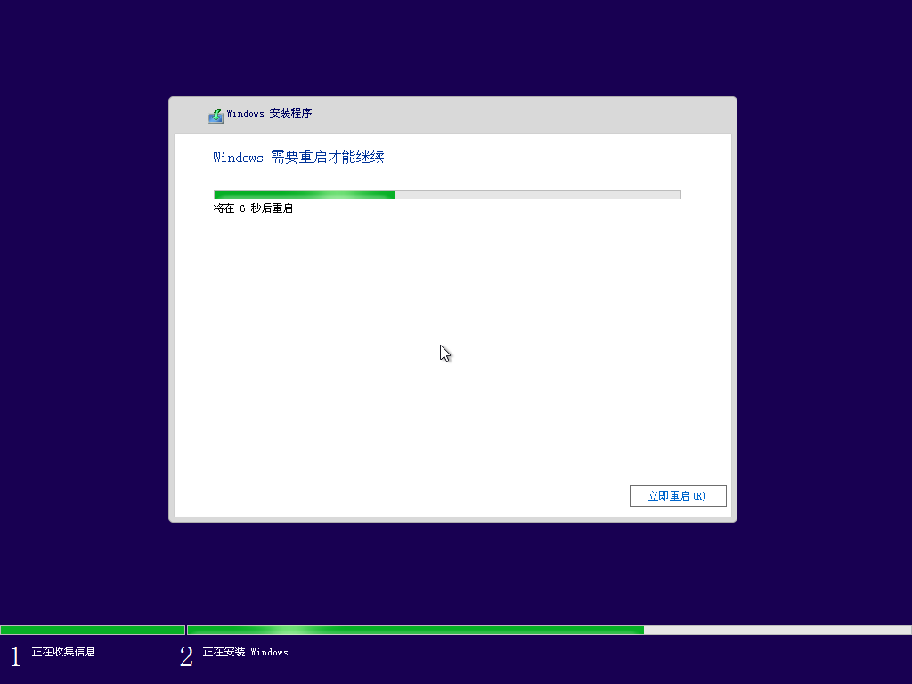
第三步：等待系统安装完成，做最后的系统配置
重启后，进入系统最后配置页，这里会要求您做一些简单的设置，创建登录账户，按照提示操作即可。怎么选都可以。
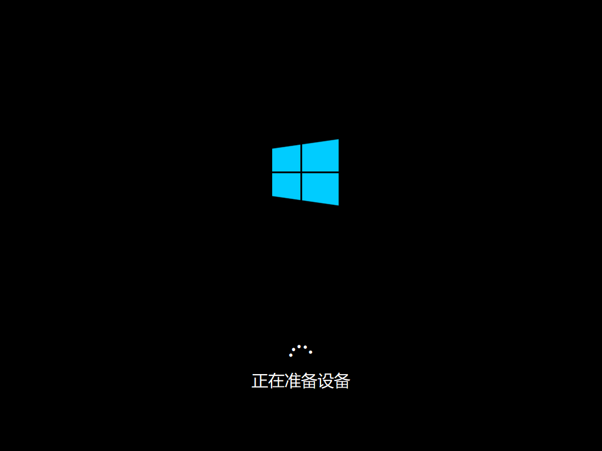
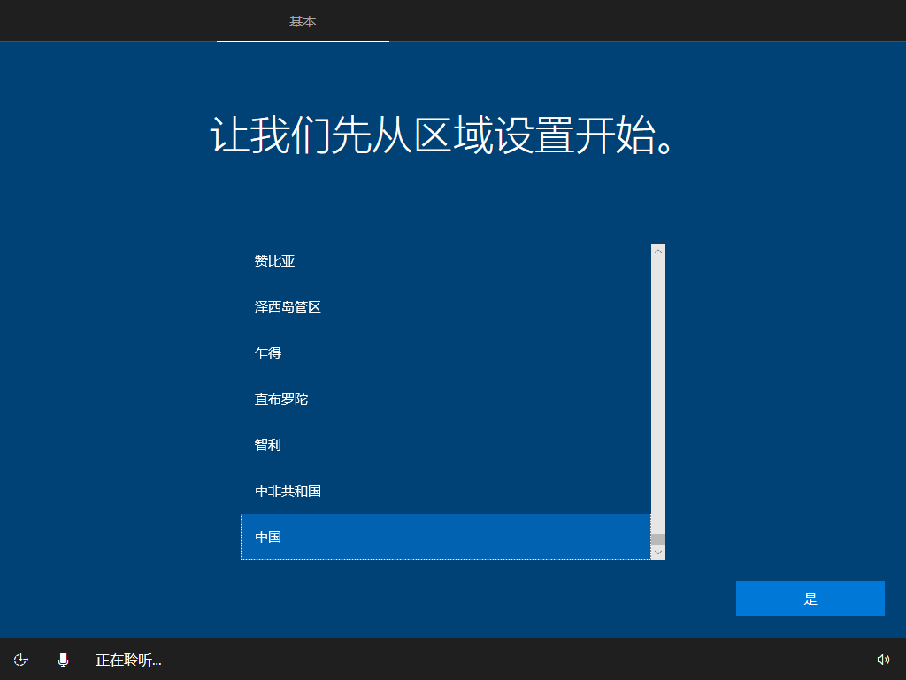
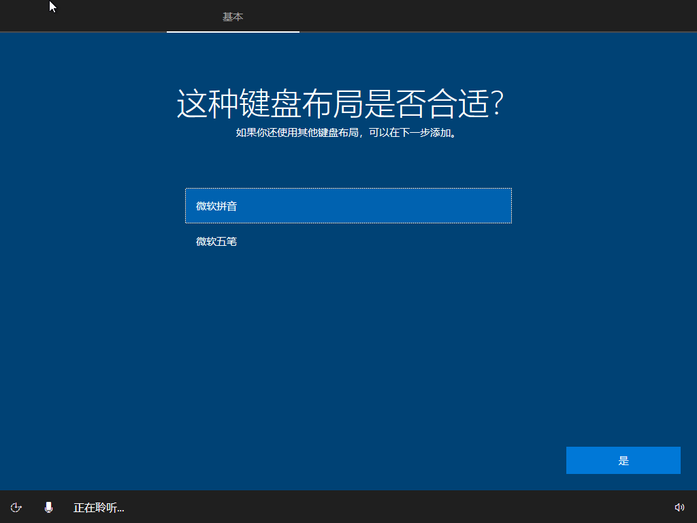


至此，系统就算安装完毕了。
第四步：进入桌面，装驱动装软件
进入到桌面后，请尽快安装驱动，您可以自己提前备好需要安装的驱动，也可以用驱动精灵联网装驱动。
至此，全部工作结束，尽情享用吧。
常见异常问题解决
1.提示“Windows 无法安装到这个磁盘。选中的磁盘具有MBR分区表。在 EFI 系统上，Windows 只能安装到 GPT 磁盘”
遇到这种报错，是因为要安装系统的那块硬盘是MBR分区表，需要legacy启动的PE才能安装，而PE却是UEFI启动的，因此报错。解决方法是：重启电脑,以legacy方式进入PE，再进行安装就好了。请牢记UEFI<->GPT和Legacy<->MBR的这种对应关系。只要严格按照必读教程的要求来，这个提示是不会遇到的。
2.提示“windows无法安装到这个磁盘 选中的磁盘采用GPT分区形式”
和第一种错误恰恰相反，是因为要安装系统的那块硬盘是GPT分区表，而PE却是Legacy启动的。解决方法是：重启电脑,以UEFI方式进入PE，再进行安装就好了。
原生安装Windows7
本篇教程将详细介绍使用微PE安装微软原版Windows7系统的具体方法流程、注意事项、异常问题解决等。
其实原生安装Windows7的方法和安装Windows8.1或10的方法步骤完全一样，但由于Win7这个系统比较老，在一些新机器上安装会出问题，这里单独说一注意事项
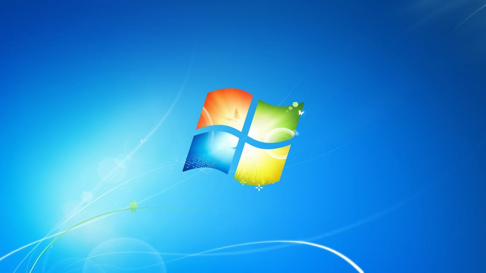
原生安装Windows7的特别提示
1.如果需要原生安装Windows7，必须进入Win8PE。
2.原版的Windows7比较老，原生连USB3.0驱动都没有，只能装到比较老的机器上。在新机器上要么蓝屏，要么鼠标键盘动不了。
3.如果坚持必须要在新机器上安装Windows7，请在安装完成后使用Dism++工具往本地安装好的系统上注入USB3.0和NVME驱动。
4.如果觉着注入新驱动比较麻烦，可以通过下面的链接获得一份打了NVME驱动和USB3.0的Windows7原版镜像ISO。
1
链接: https://pan.baidu.com/s/1GyumDVO3jWwJC_vDTbodCg?pwd=w6uj 提取码: w6uj
5.我们不建议新机器装Windows7，性能发挥不出来。也无法使用新的高级特性，如果因为某些软件必须Win7的缘故，建议用虚拟机安装一个Windows7。
安装Windows7的具体流程
与安装Windows8.1或10的方法一样
安装器方法安装原版Windows
本篇教程将详细介绍使用微PE中的第三方windows安装器安装微软原版系统的具体方法流程、注意事项、异常问题解决等。
第三方的Windows安装器利用了与微软原版Windows安装程序一样的原理，直接将系统中的文件，解压到硬盘上，实现最终的安装。 该方式的特点是：安装系统和PE的启动类型、PE的位数无关，以任何方式启动的PE，均能将系统安装至任意分区表类型的硬盘上。
本方法支持的系统：Windows 7，Windows 8.1，Windows 10等NT6系列的全部系统。甚至支持安装XP。

安装系统前的准备工作
使用安装器安装系统的具体操作步骤并不多，如果能按照下面的要求做足充分的判断，可极大提高成功率。
观察自己的系统所在硬盘是GPT分区表还是MBR
如果是MBR的分区表，这样装就好。如果是GPT分区表，推荐原生安装方法：原生安装Windows8.1&10，或者是安装完手工修复一下UEFI引导。
判断系统盘所在硬盘的位置？
如果您的机器上装了多块硬盘，请做好区分，别装错了。如果需要提前分区，就先分好再装。
请务必提前做好数据备份
安装的时候要格式化C盘，请务必将C盘文件备份至其他。必要时，将文档照片类的不可再生数据存储至外部存储器一份。
正式开始安装系统
安装器安装原版系统的操作步骤为：
- 第一步：PE内将要安装的系统ISO镜像挂载为虚拟光驱；
- 第二步：打开桌面上的Windows安装器，输入选项后安装；
- 第三步：等待系统安装完成，做最后的系统配置；
- 第四步：进入桌面，装驱动装软件。
第一步：将要安装的系统ISO镜像挂载为虚拟光驱
从U盘启动进入PE内，打开U盘内的存放系统镜像的“ISO”目录，找到要安装的镜像。
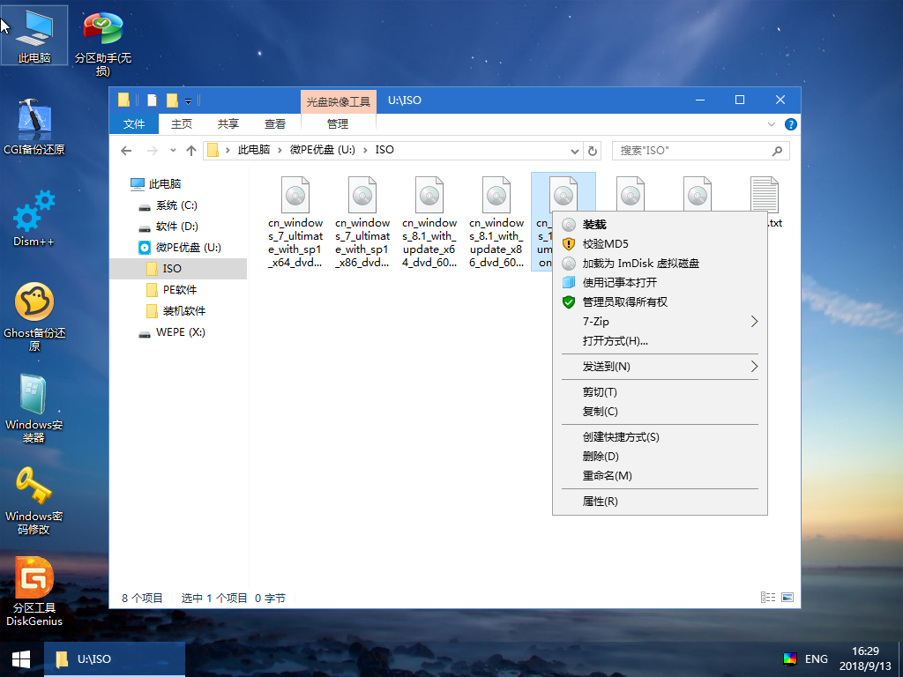
对着ISO镜像点右键，选择挂载，或者直接双击，该ISO就会被挂载为一个新的虚拟的光盘驱动器，和插入安装光盘效果类似。它会显示在“我的电脑”里，并且有一个盘符。
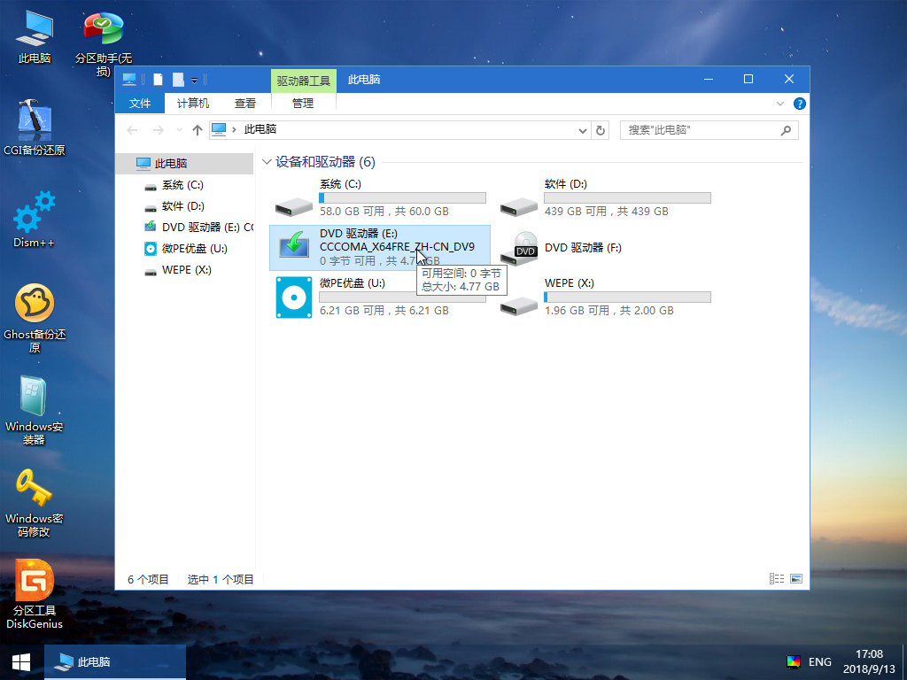
第二步：打开桌面上的Windows安装器，输入选项后安装
执行桌面上的Windows安装器，按照提示进行选择。
Windows安装器顶部有两个选项卡，右边的支持WIN10、8.1、7的安装，左边的支持XP的安装。请注意区别对待。
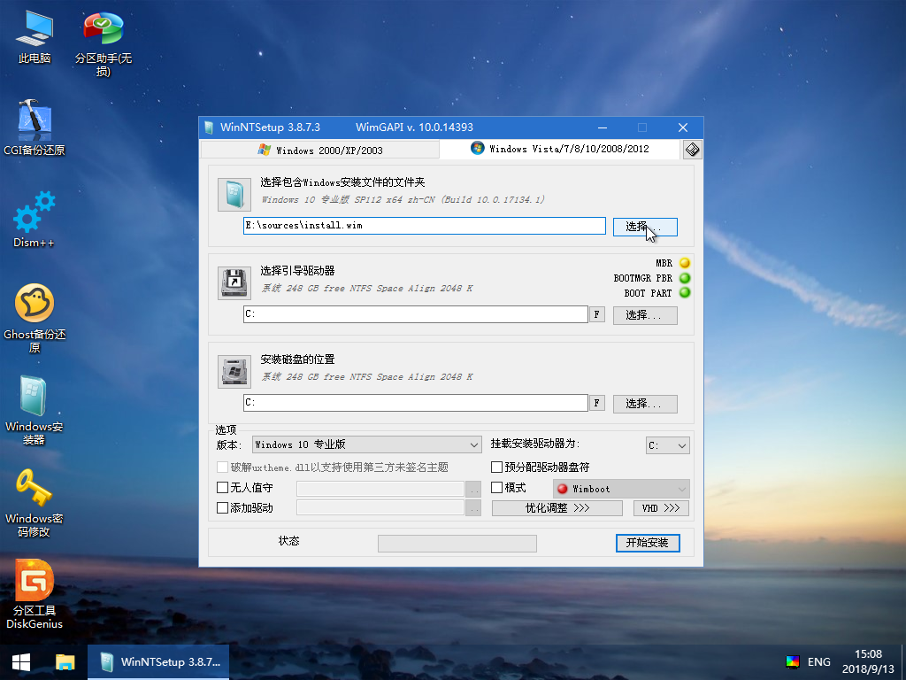
在第一个选项中，请选择系统包install.wim的位置（在刚才挂载出来的虚拟光驱里的source文件夹里），比如H:\sources\install.wim等等。
注：如果是安装XP的话，选择左侧的选项卡，第一个选项选择挂载出来的虚拟光驱根目录或I386。
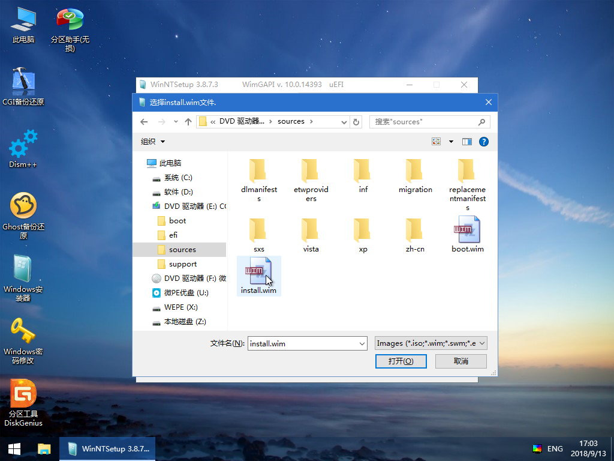
其余的两项填写要安装到的目标系统盘，正常情况下选择 C: 即可
当选择好三个选项之后，左下角的系统版本按照需要进行选择。
之后就可以点击开始安装，在弹出的确认对话框中再次点确认即可开始安装。
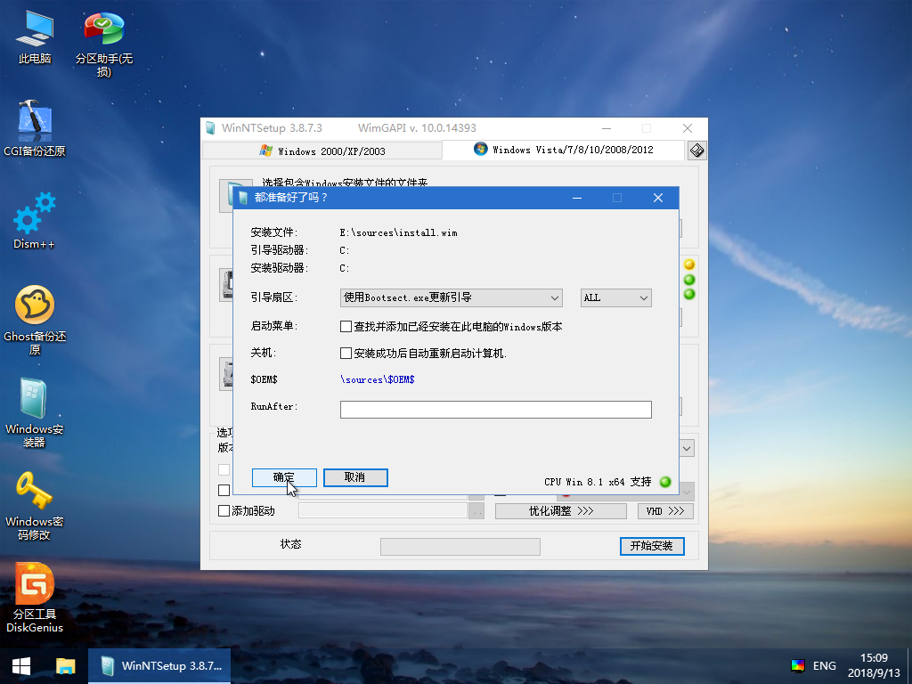
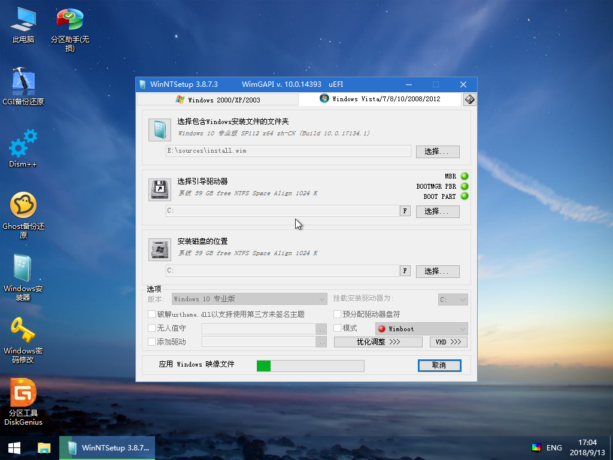
安装完成后，若没有自动重启，请手工重启。
第三步：等待系统安装完成，做最后的系统配置
重启后，进入系统最后配置页，这里会要求您做一些简单的设置，创建登录账户，按照提示操作即可。怎么选都可以。


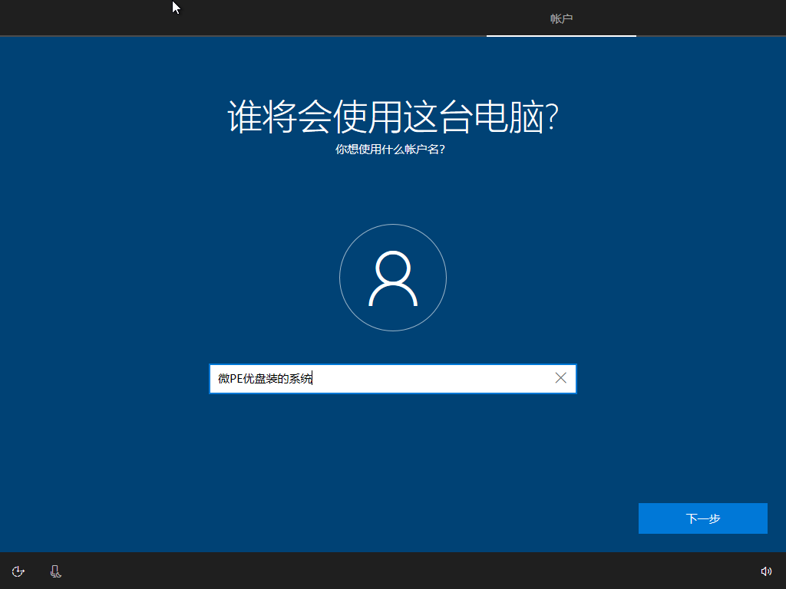
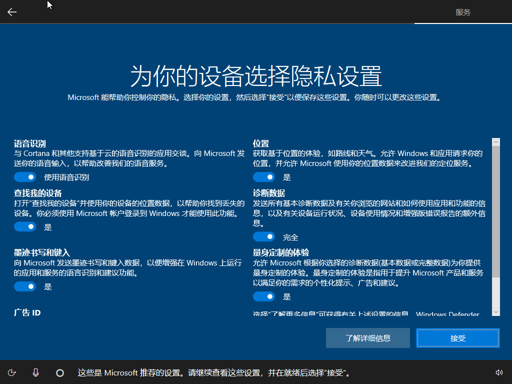


至此，系统就算安装完毕了。
第四步：进入桌面，装驱动装软件
进入到桌面后，请尽快安装驱动，您可以自己提前备好需要安装的驱动，也可以用驱动精灵联网装驱动。
至此，全部工作结束，尽情享用吧。
安装其它Ghost&Wim格式系统
本篇教程将详细介绍使用微PE安装原版安装版以外Ghost&Wim格式系统的具体方法流程、注意事项等。
本方法支持的格式：.gho .wim
安装其它Ghost&Wim格式系统的特别提示
- 这类.gho .wim系统，可以从网上单独下载。
- 安装这类系统的实质是将.gho .wim通过备份还原工具恢复到系统盘。
- 这种方法一般只支持legacy启动，即磁盘是MBR分区表。如果硬要装到GPT并UEFI，需要单独修复UEFI引导。
安装其它Ghost&Wim格式系统的具体流程
进入PE后，打开桌面上的CGI工具。选择还原分区，选中要还原的分区位置，并选择要恢复的.gho .wim镜像。
之后点开始执行，镜像就恢复到系统盘了。

硬盘快速分区教程
本篇教程将详细介绍使用微PE对硬盘进行完全格式化重新分区的具体方法流程、注意事项等。
本方法支持的分区的格式为：GPT MBR
硬盘分区的特别提示
- 本分区教程会完全格式化硬盘，如果您需要无损分区，请参考：硬盘无损调整教程。
- 本分区方法可以将分区重新分为GPT或MBR。
- 在分区操作之前，请务必做好数据备份。
硬盘分区的具体操作
进行这个操作需要借助专业的分区工具，这里我们推荐分区助手，比较简单直观。打开PE桌面上的“分区助手(无损)”。您会看到当前硬盘的列表。
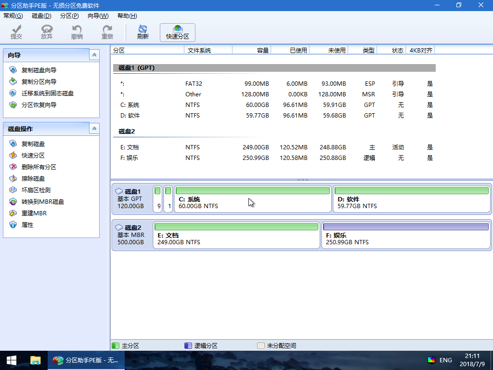
对着需要分区的硬盘点右键，选择快速分区。
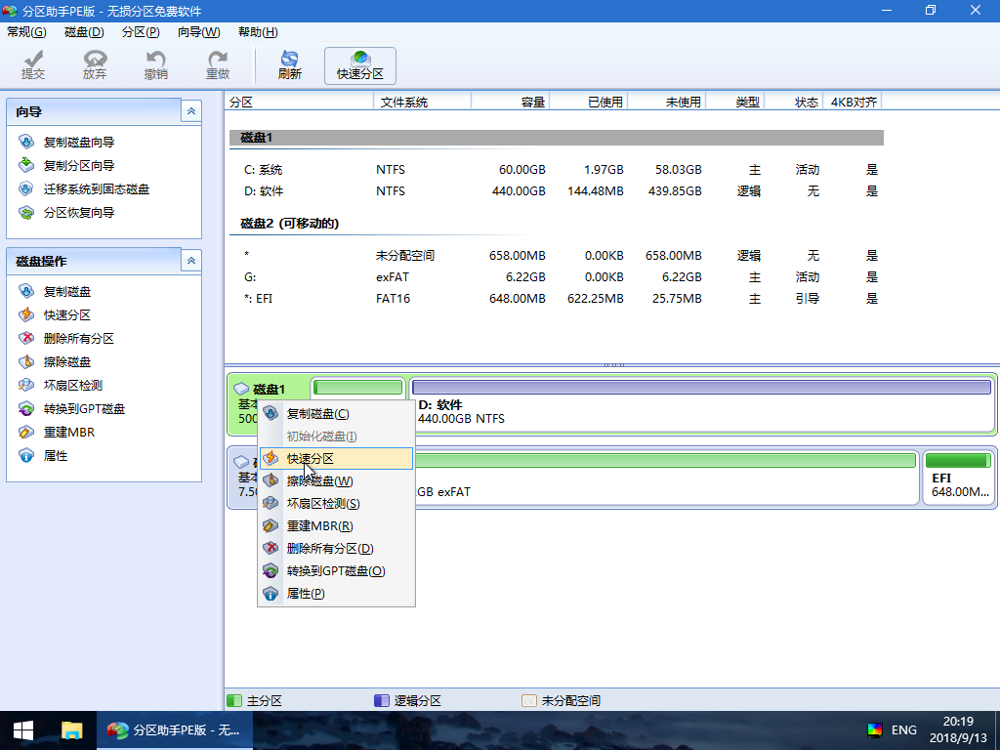
在弹出的快速分区窗口中选择需要分区的个数、分区表类型GPT或者MBR、4K对齐等，然后点击开始执行。
注意
如果您需要使用UEFI启动系统，这里必须选择GPT分区表，如果使用Legacy方式启动电脑，这里必须选择MBR。
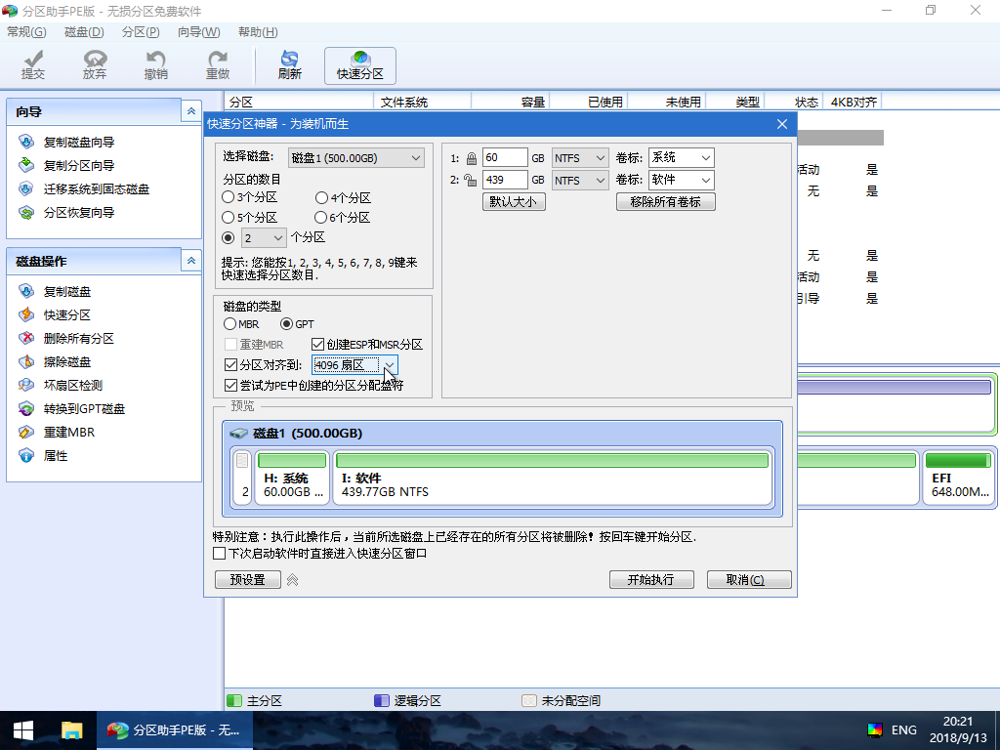
等待执行完成之后，分区操作完毕。
修改本地Windows密码
本篇教程将详细介绍使用微PE修改本地Windows密码等。
修改本地Windows密码的特别提示
- 该功能不可用于非法用途。
- 该功能使用前需选确认本地Windows是否在C盘。
修改本地Windows密码的具体流程
进入PE后，打开桌面上的“Windows密码修改”工具。
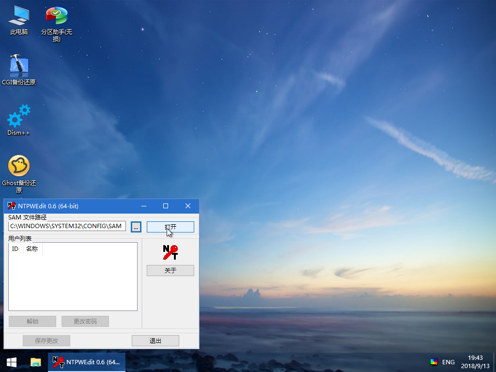
打开 C:\WINDOWS\SYSTEM32\CONFIG\SAM 可列出本地全部的账户。
选中要修改的账户，点击解锁或更改密码，按照提示完成操作即可。
系统备份恢复
本篇教程将详细介绍使用微PE安装原版安装版以外Ghost&Wim格式系统的具体方法流程、注意事项等。
本方法支持的格式：.gho .wim .esd
系统备份恢复的特别提示
- 备份恢复保存的镜像文件支持.gho .wim .esd。
- 我们推荐使用wim格式的备份，特别是GPT分区表。
- 在做系统备份操作之前，请多次确认恢复、备份的分区是否正确，以免数据丢失。
系统备份恢复的具体流程
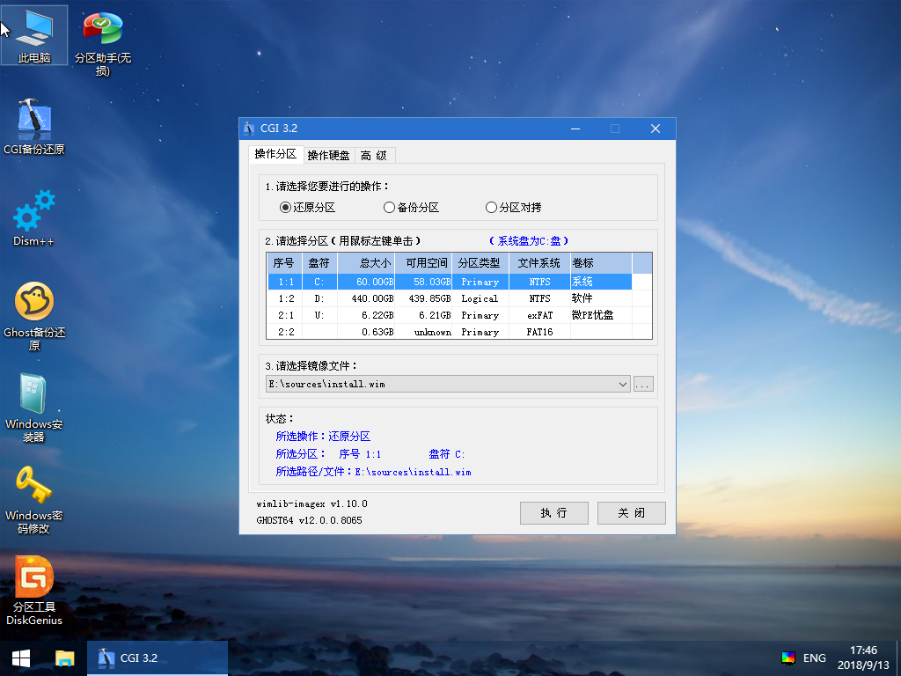
系统备份
进入PE后，打开桌面上的CGI工具。选择备份分区，选中要备份的分区位置，并选择.gho .wim要保存的镜像位置。
之后点开始执行，系统盘就备份到镜像了。
系统还原
进入PE后，打开桌面上的CGI工具。选择还原分区，选中要还原的分区位置，并选择要恢复的.gho .wim镜像。
之后点开始执行，镜像就恢复到系统盘了。
以上内容均来自微PE官方教程，仅供个人学习之用